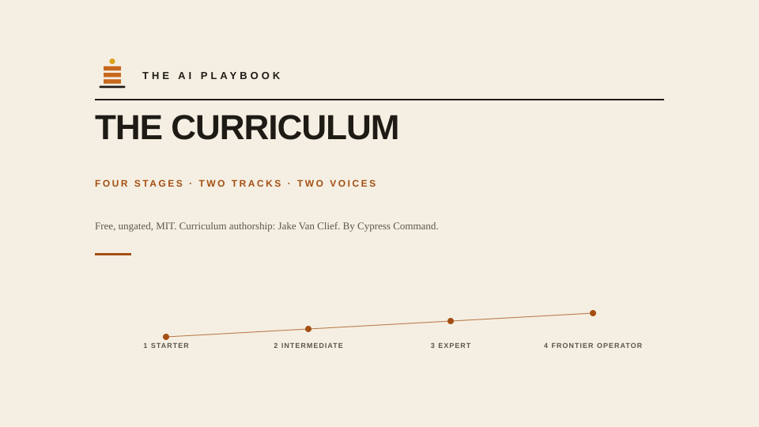

This page compiles 3 files from the repository, verbatim, in reading order. The living version: this folder on GitHub.
README.md
The AI Playbook Curriculum
Part of The AI Playbook by Cypress Command. Free. Ungated. MIT. Curriculum authorship: Jake Van Clief.

The Playbook builds your system. The Curriculum builds you. Same four stages, same numbers, going deeper where you want to build the tooling rather than operate it.
How this relates to the Playbook site: the site is what you build for a business, ten sections in four stages. This Curriculum is the same four stages for a person or a team who wants to build AI systems themselves. Full mapping: PLAYBOOK-AND-CURRICULUM.md.
Two tracks at every stage: individual and company.
Two voices at every stage: the standard docs and an ELI10 companion.
Use every top AI product well. Know the jargon. Have your own prompts and rituals.
30 days
2 Intermediate
Comfortable with AI
Build your own agents, RAG systems, and MCP servers. Own your evals. Control cost.
60 to 90 days
3 Expert
An AI builder
Ship AI features to real users. Orchestrate multi-agent systems. Handle drift, incidents, and adversarial inputs at scale. Lead an AI team. Custom training. Applied alignment. Safety engineering. Red-teaming.
10 to 18 months
4 Frontier Operator
An AI practitioner
Build novel systems, publish research, contribute to open weights or foundation infra.
Ongoing
The pace column is the Curriculum's own estimate for the depth track. It is not the Playbook's stage gate; the Playbook's stages are measured in weeks of building your system, and the two run in parallel.
See STAGE-MAP.md for the exit criteria at every stage.
Set up your tools:shared/starter-packs/, ready-to-paste custom instructions for Claude, ChatGPT, Perplexity, Claude Code, Cursor, Grok, Gemini, and the Anthropic API
Not sure this is the right program for you?
Read PLAYBOOK-AND-CURRICULUM.md. The Curriculum assumes your files, identity, and knowledge are already in a shape AI can use. If they are not yet, start with The AI Playbook, Stage 1. Both are free; both are open. Neither gates its content.
The ELI10 layer
Every technical section in this program has a matching plain-language companion in the eli10/ folder at that stage. Think of it as the same information explained to a curious 10-year-old: no jargon, real analogies, why-it-matters framing.
If a section feels dense, jump to its ELI10 twin first, then come back.
Program design principles
Two tracks, every stage: individual and company
Two voices, every stage: technical and ELI10
Every doc is opinionated: no placeholder shrug docs
Every workflow has an eval: measurable, not vibes
Every autonomy step is earned: HITL before full auto
Governance in front of scale: policy before pilots
Continuous refresh: the field moves; the kit moves with it
Lineage
Formerly the Groundwork Curriculum (five levels, August 2026): Stage 3 Expert combines what were Level 3 Advanced and Level 4 Professional, and the module numbering inside Stage 3 runs straight through. The site's /lineage/ page records the full history.
Ownership
You. Fork it. Extend it. Prune it. Ship your own kits from it.
License
MIT (see LICENSE). Use it, remix it, teach with it.
PLAYBOOK-AND-CURRICULUM.md
The Playbook and the Curriculum: how the two fit together
TL;DR. The AI Playbook is what you build for a business: ten sections in four stages, each one interviewed out of you, tested, and used on real work before the next. The Curriculum is the same four stages for a person or a team who wants to build the tooling rather than operate it. Same stage numbers, deeper at each.
The Curriculum: this repository. Start at README.md.
One climb, two tracks
Stage
The Playbook (what you build)
The Curriculum (what you learn)
1 Starter
Choose one workflow, know me, learn my work. One real run, human-reviewed.
Use every top AI product well; your own prompts, rituals, and jargon.
2 Intermediate
Know what is true, remember my world, capture and commit.
Build agents, RAG, MCP servers, evals; control cost.
3 Expert
Know your limits, help me operate. A bounded operator inside enforced limits.
Ship to real users with SLOs; multi-agent systems; drift and incidents; lead an AI team; custom training; alignment and safety engineering.
4 Frontier Operator
Automate the proven work, improve and survive.
Novel systems, research, open weights, foundation infrastructure.
The Playbook's core rule is do not automate chaos: automation enters at Stage 4 only, and only inside the limits Stage 3 wrote down. The Curriculum starts where a serious learner needs help: not "how do I organize my business" but "how do I get genuinely good at this, and eventually build systems without shipping something that hurts someone."
Where they hand off
The Playbook's section 3.2, Help me operate, is the bridge. It hands off to Curriculum Stage 2 the moment you want to build automation as software rather than configure it as a tool. Everything in the Curriculum from Stage 2 up assumes the Playbook's Stage 1 and 2 artifacts exist: an identity file, a source register, a memory the system keeps.
Which one first
Your files, identity, and knowledge are not yet in a shape AI can use: the Playbook, Stage 1.
You already run a working system and want to build the tooling yourself: the Curriculum, Stage 2.
You are a team lead deciding what to roll out: the Playbook's company lane, then the Curriculum's company track at the same stage.
Lineage
Formerly "Groundwork and the Curriculum": Groundwork's six standing orders and the Curriculum's five levels were two numbering systems for one program. In September 2026 both were folded into the Playbook's four stages. The site's /lineage/ page keeps the full mapping.
STAGE-MAP.md
Stage Map
The full path from novice to frontier. See shared/graphics/stage-map.svg for the visual.
Stage 1 Starter
Prereq: none.
Exit criteria:
- You have a master system prompt and About-Me block
- You have a personal prompt library (20+ prompts)
- You know which model to route which task to
- You can pass the 15-question jargon fluency test
- You've shipped at least 5 real work outputs using AI
- For the company track: AUP signed, accounts procured, first two department copilots piloting
Unlocks: ability to build.
Stage 2 Intermediate
Prereq: Stage 1 exit criteria met.
Exit criteria:
- You've built 3 real custom agents on your own stack
- You've deployed at least one MCP server
- You've built a real RAG pipeline over your own docs
- You have an eval harness with regression testing
- You understand cost engineering and have measured cost per workflow
- For the company track: eval framework live, observability platform running, first agents in production
Unlocks: ability to ship AI to real users.
Stage 3 Expert
Prereq: Stage 2 exit criteria met.
Exit criteria:
- You've shipped an AI product or feature to real users, with SLOs met
- You've orchestrated a multi-agent workflow in production
- You've handled at least one real drift or incident
- You've done a model bake-off with a data-driven decision
- You've hardened one workflow against adversarial input
- For the company track: full observability, incident response tested, cross-department scaling underway
- You've fine-tuned a model with measurable impact
- You've led a red-team exercise
- You understand training-stack internals (attention, MoE, quantization, inference)
- You can teach any concept from Stages 1 to 3
- You can lead an AI team or an AI initiative
- For the company track: applied research team stood up, safety program mature, cross-industry benchmarking
Unlocks: practitioner-grade work.
Formerly Level 3 Advanced and Level 4 Professional.
Stage 4 Frontier Operator
Prereq: Stage 3 exit criteria met.
Exit criteria:
- You've contributed original work: a paper, a novel system, a widely-used tool, or open-weight training
- You engage with the research community
- You have a point of view on where the field is going and act on it
- For the company track: category-defining product, open-source contributions, industry-recognized capability
Unlocks: contribution to the field itself.
Movement between stages
You don't have to be uniform. A person might be Stage 3 on RAG, Stage 2 on agents.
A company might be Stage 2 on governance, Stage 1 on department deployments.
The map is a compass, not a report card.
Timing
Realistic timelines assume 4 to 8 hours/week of dedicated effort alongside real work:
Stage
Individual (fast)
Individual (typical)
Company (fast)
Company (typical)
1
15 days
30 days
60 days
90 days
2
45 days
90 days
90 days
180 days
3
270 days
540 days
540 days
1080 days
4
360 days
ongoing
720 days
ongoing
Faster is possible with full-time focus and prior software background.